Chapitre 5 Séance 3
library("tidyverse") # tidy et ggplot2
library("agricolae") # SNK.test() Student Newman-Keuls
library("car") # leveneTest()
library("rstatix") # convert_as_factor()
library("corrplot") # matrice de corrélation cor(), corrplot()
library("ggpmisc") # stat_poly_eq() ajout équation
df <- read_csv("data/seance.csv")
df <- df %>%
mutate(regime = factor(regime))5.1 Masse des oeufs masse_oeuf
5.1.1 Test de normalité de Shapiro-Wilk, masse des oeufs
Ho. la distribution de l’échantillon est normale (ou n’est pas différente d’une distribution normale)
H1 ou Ha si non.
Si p-value > 0,05 alors la distribution des données n’est pas significativement différente de la distribution normale. On accepte Ho.
## # A tibble: 1 x 3
## variable statistic p
## <chr> <dbl> <dbl>
## 1 masse_oeuf 0.962 0.342p-value > 0.05 => distribution normale.
5.1.2 Test de sphéricité (homogénéité des variances), masse des oeufs
Pour ces tests :
Ho. Toutes les variances des populations (traitements) sont égales.H1ouHa. Au moins deux d’entre elles diffèrent.des valeurs p < à 0,05 suggèrent que les variances sont significativement différentes et donc que l’hypothèse d’homogénéité des variances n’est pas respectée.
## Levene's Test for Homogeneity of Variance (center = median)
## Df F value Pr(>F)
## group 9 0.8053 0.6166
## 20p-value > 0.05, variances homogènes.
5.1.3 ANOVA, masse des oeufs
Si la p-value est < 0.05, on conclut qu’il existe des différences significatives entre les groupes (entre au moins deux groupes).
si non, il n’y a pas de différence entre les effets des différents régimes.
## Analysis of Variance Table
##
## Response: masse_oeuf
## Df Sum Sq Mean Sq F value Pr(>F)
## regime 9 34.950 3.8833 8.5844 3.592e-05 ***
## Residuals 20 9.047 0.4524
## ---
## Signif. codes: 0 '***' 0.001 '**' 0.01 '*' 0.05 '.' 0.1 ' ' 1p-value < 0.01, les effets d’au moins deux régimes diffèrent très significativement.
5.1.4 Visualisation boxplots, masse des oeufs
ggplot(data = s3, aes(x = regime, y = masse_oeuf)) +
geom_boxplot() +
#theme_classic() +
xlab("Régimes") + ylab("Masse de l'oeuf") +
theme(axis.text.x = element_text(angle = 45, color = "black", vjust = 1, hjust = 1))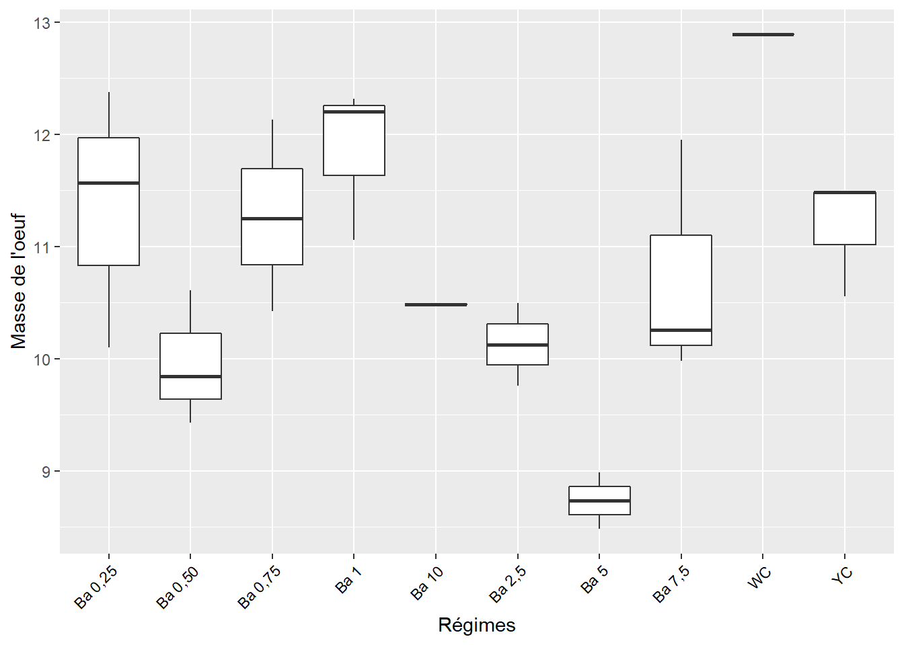
5.1.5 Test post-hoc, Student-Newman Keuls, masse des oeufs
Les comparaisons des moyennes par paires :
tb_m3 <- (SNK.test(lm3, "regime", group = TRUE))$groups %>%
mutate(regime = rownames(.)) %>%
select(regime, masse_oeuf, groups) %>%
as_tibble()
tb_m3## # A tibble: 10 x 3
## regime masse_oeuf groups
## <chr> <dbl> <chr>
## 1 WC 12.9 a
## 2 Ba 1 11.9 ab
## 3 Ba 0,25 11.3 bc
## 4 Ba 0,75 11.3 bc
## 5 YC 11.2 bc
## 6 Ba 7,5 10.7 bc
## 7 Ba 10 10.5 bc
## 8 Ba 2,5 10.1 bc
## 9 Ba 0,50 9.96 c
## 10 Ba 5 8.74 d5.1.6 Visualisation des groupes, bareplots avec labels, masse des oeufs
ggplot(data = tb_m3, mapping = aes(x = regime, y = masse_oeuf)) +
geom_bar(stat = "identity", color = "blue", fill = "grey", width = 0.6) +
#ylim(0, 2) +
geom_text(data = tb_m3, aes(label = groups), vjust = -0.5, size = 4) +
theme_classic() +
xlab("Régimes") + ylab("Masse des oeufs (g)") +
theme(axis.text.x = element_text(angle = 45, color = "black", vjust = 1, hjust = 1))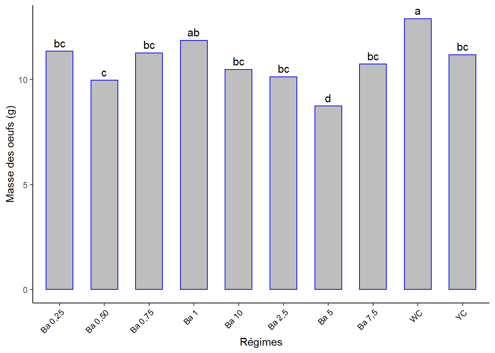
5.2 Masse de la coquille masse_coq
5.2.1 Test de normalité de Shapiro-Wilk, masse de la coquille
- Ho. la distribution de l’échantillon est normale (ou n’est pas différente d’une distribution normale).
## # A tibble: 1 x 3
## variable statistic p
## <chr> <dbl> <dbl>
## 1 masse_coq 0.954 0.214p-value > 0.05 => distribution normale.
5.2.2 Test de sphéricité (homogénéité des variances), masse de la coquille
Ho. Toutes les variances des populations sont égales.H1ouHa. Au moins deux d’entre elles diffèrent.
## Levene's Test for Homogeneity of Variance (center = median)
## Df F value Pr(>F)
## group 9 0.9877 0.4796
## 20p-value > 0.05, => variances homogènes.
5.2.3 ANOVA, masse de la coquille
Si la p-value est inférieure au seuil de signification 0.05, on conclut qu’il existe des différences significatives entre les groupes (entre au moins deux groupes).
si non, il n’y a pas de différence entre les effets des différents régimes.
## Analysis of Variance Table
##
## Response: masse_coq
## Df Sum Sq Mean Sq F value Pr(>F)
## regime 9 0.35845 0.039828 3.1607 0.01537 *
## Residuals 20 0.25202 0.012601
## ---
## Signif. codes: 0 '***' 0.001 '**' 0.01 '*' 0.05 '.' 0.1 ' ' 1p-value < 0.05 => au moins deux régimes ont des effets significativement différents.
5.2.4 Visualisation boxplots, masse de la coquille
ggplot(data = s3, aes(x = regime, y = masse_coq)) +
geom_boxplot() +
#theme_classic() +
xlab("Régimes") + ylab("Masse de la coquille") +
theme(axis.text.x = element_text(angle = 45, color = "black", vjust = 1, hjust = 1))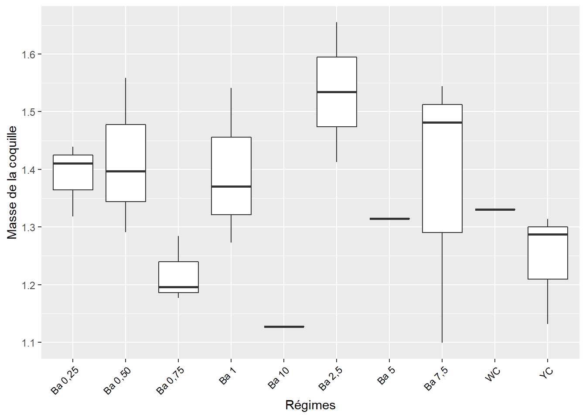
5.2.5 Test post-hoc, Student-Newman Keuls, masse de la coquille
Comparaisons des moyennes par paires
tb_mc3 <- (SNK.test(lmc3, "regime", group = TRUE))$groups %>%
mutate(regime = rownames(.)) %>%
select(regime, masse_coq, groups) %>%
as_tibble()
tb_mc3## # A tibble: 10 x 3
## regime masse_coq groups
## <chr> <dbl> <chr>
## 1 Ba 2,5 1.53 a
## 2 Ba 0,50 1.42 ab
## 3 Ba 1 1.39 ab
## 4 Ba 0,25 1.39 ab
## 5 Ba 7,5 1.37 ab
## 6 WC 1.33 ab
## 7 Ba 5 1.31 ab
## 8 YC 1.24 ab
## 9 Ba 0,75 1.22 ab
## 10 Ba 10 1.13 b5.2.6 Visualisation des groupes, bareplots avec labels, masse de la coquille
ggplot(data = tb_mc3, mapping = aes(x = regime, y = masse_coq)) +
geom_bar(stat = "identity", color = "blue", fill = "grey", width = 0.6) +
#ylim(0, 2) +
geom_text(data = tb_mc3, aes(label = groups), vjust = -0.5, size = 4) +
theme_classic() +
xlab("Régimes") + ylab("Masse de la coquille (g)") +
theme(axis.text.x = element_text(angle = 45, color = "black", vjust = 1, hjust = 1))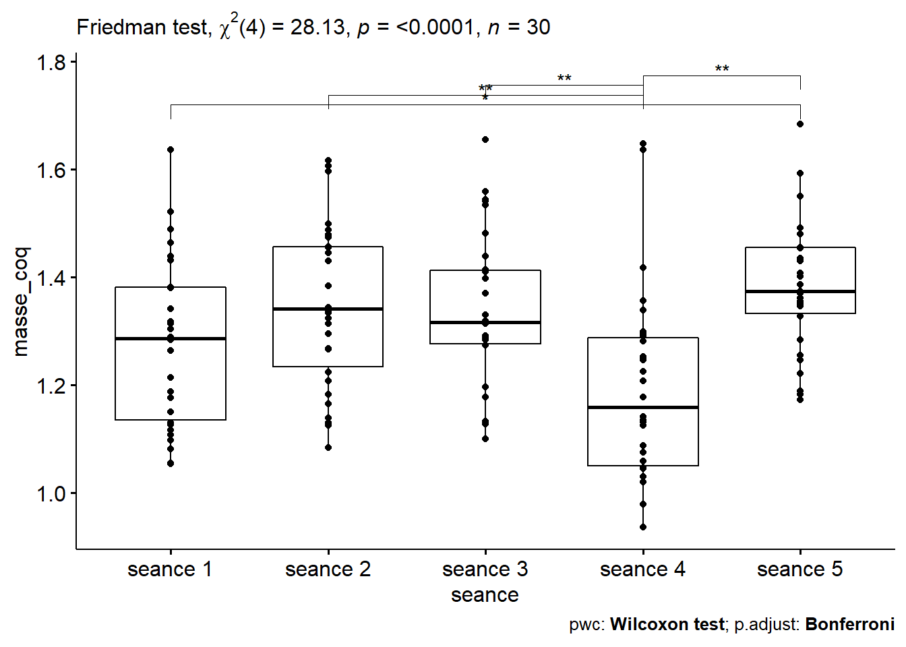
5.3 Épaisseur de la coquille epaisseur_coq
5.3.1 Test de normalité de Shapiro-Wilk, épaisseur de la coquille
- Ho. la distribution de l’échantillon est normale (ou n’est pas différente d’une distribution normale).
## # A tibble: 1 x 3
## variable statistic p
## <chr> <dbl> <dbl>
## 1 epaisseur_coq 0.949 0.159p-value > 0.05 => distribution normale.
5.3.2 Test de sphéricité (homogénéité des variances), épaisseur de la coquille
Ho. Toutes les variances des populations sont égales.H1ouHa. Au moins deux d’entre elles diffèrent.
## Levene's Test for Homogeneity of Variance (center = median)
## Df F value Pr(>F)
## group 9 0.6802 0.7179
## 20p-value > 0.05 => variances homogènes.
5.3.3 ANOVA, épaisseur de la coquille
Si la p-value est inférieure au seuil de signification 0.05, on conclut qu’il existe des différences significatives entre les groupes (entre au moins deux groupes).
si non, il n’y a pas de différence entre les effets des différents régimes.
## Analysis of Variance Table
##
## Response: epaisseur_coq
## Df Sum Sq Mean Sq F value Pr(>F)
## regime 9 0.075201 0.0083556 8.2798 4.671e-05 ***
## Residuals 20 0.020183 0.0010092
## ---
## Signif. codes: 0 '***' 0.001 '**' 0.01 '*' 0.05 '.' 0.1 ' ' 1p-value < 0.01 => au moins deux régimes ont des effets très significativement différents.
5.3.4 Visualisation boxplots, épaisseur de la coquille
ggplot(data = s3, aes(x = regime, y = epaisseur_coq)) +
geom_boxplot() +
#theme_classic() +
xlab("Régimes") + ylab("Épaisseur de la coquille") +
theme(axis.text.x = element_text(angle = 45, color = "black", vjust = 1, hjust = 1))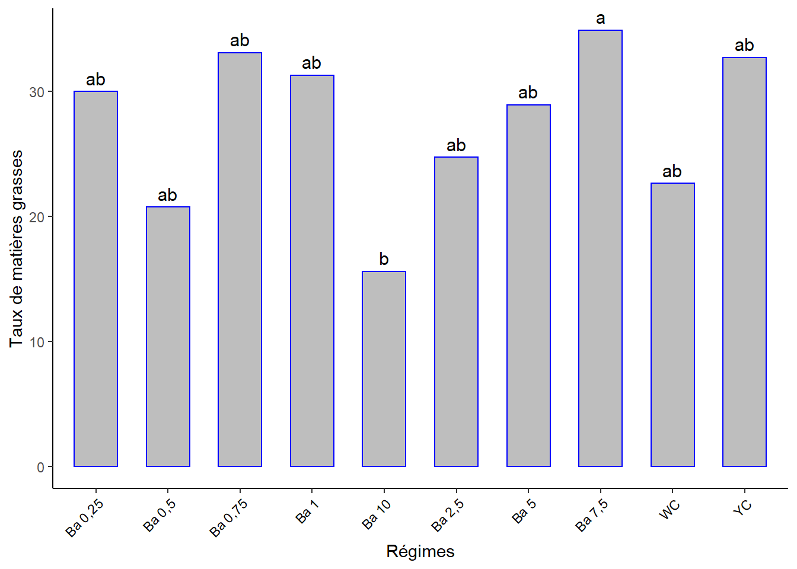
5.3.5 Test post-hoc, Student-Newman Keuls, épaisseur de la coquille
Comparaisons des moyennes par paires
tb_ec3 <- (SNK.test(lec3, "regime", group = TRUE))$groups %>%
mutate(regime = rownames(.)) %>%
select(regime, epaisseur_coq, groups) %>%
as_tibble()
tb_ec3## # A tibble: 10 x 3
## regime epaisseur_coq groups
## <chr> <dbl> <chr>
## 1 Ba 10 0.38 a
## 2 Ba 1 0.297 b
## 3 Ba 2,5 0.29 b
## 4 Ba 0,25 0.287 b
## 5 Ba 5 0.275 b
## 6 Ba 0,50 0.26 b
## 7 Ba 0,75 0.24 bc
## 8 Ba 7,5 0.24 bc
## 9 YC 0.23 bc
## 10 WC 0.18 c5.3.6 Visualisation des groupes, bareplots avec labels, épaisseur de la coquille
ggplot(data = tb_ec3, mapping = aes(x = regime, y = epaisseur_coq)) +
geom_bar(stat = "identity", color = "blue", fill = "grey", width = 0.6) +
#ylim(0, 2) +
geom_text(data = tb_ec3, aes(label = groups), vjust = -0.5, size = 4) +
theme_classic() +
xlab("Régimes") + ylab("Épaisseur de la coquille (g)") +
theme(axis.text.x = element_text(angle = 45, color = "black", vjust = 1, hjust = 1))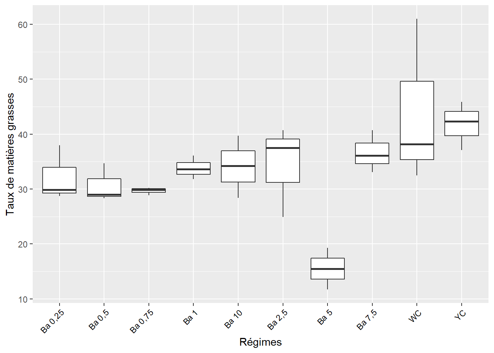
5.4 Masse du jaune d’oeuf masse_du_jaune
5.4.1 Test de normalité de Shapiro-Wilk, masse du jaune
- Ho. la distribution de l’échantillon est normale (ou n’est pas différente d’une distribution normale).
## # A tibble: 1 x 3
## variable statistic p
## <chr> <dbl> <dbl>
## 1 masse_du_jaune 0.933 0.0579p-value > 0.05 => distribution normale.
5.4.2 Test de sphéricité (homogénéité des variances), masse du jaune
Ho. Toutes les variances des populations sont égales.H1ouHa. Au moins deux d’entre elles diffèrent.
## Levene's Test for Homogeneity of Variance (center = median)
## Df F value Pr(>F)
## group 9 1.2079 0.3435
## 20p-value > 0.05, => variances homogènes.
5.4.3 ANOVA, masse du jaune
Si la p-value est inférieure au seuil de signification 0.05, on conclut qu’il existe des différences significatives entre les groupes (entre au moins deux groupes).
si non, il n’y a pas de différence entre les effets des différents régimes.
## Analysis of Variance Table
##
## Response: masse_du_jaune
## Df Sum Sq Mean Sq F value Pr(>F)
## regime 9 4.6347 0.51497 5.914 0.0004673 ***
## Residuals 20 1.7415 0.08708
## ---
## Signif. codes: 0 '***' 0.001 '**' 0.01 '*' 0.05 '.' 0.1 ' ' 1p-value < 0.01 => au moins deux régimes ont des effets très significativement différents sur la masse du jaune d’oeuf au seuil de 5%.
5.4.4 Visualisation boxplots, masse du jaune
ggplot(data = s3, aes(x = regime, y = masse_du_jaune)) +
geom_boxplot() +
#theme_classic() +
xlab("Régimes") + ylab("Masse du jaune d'oeuf (g)") +
theme(axis.text.x = element_text(angle = 45, color = "black", vjust = 1, hjust = 1))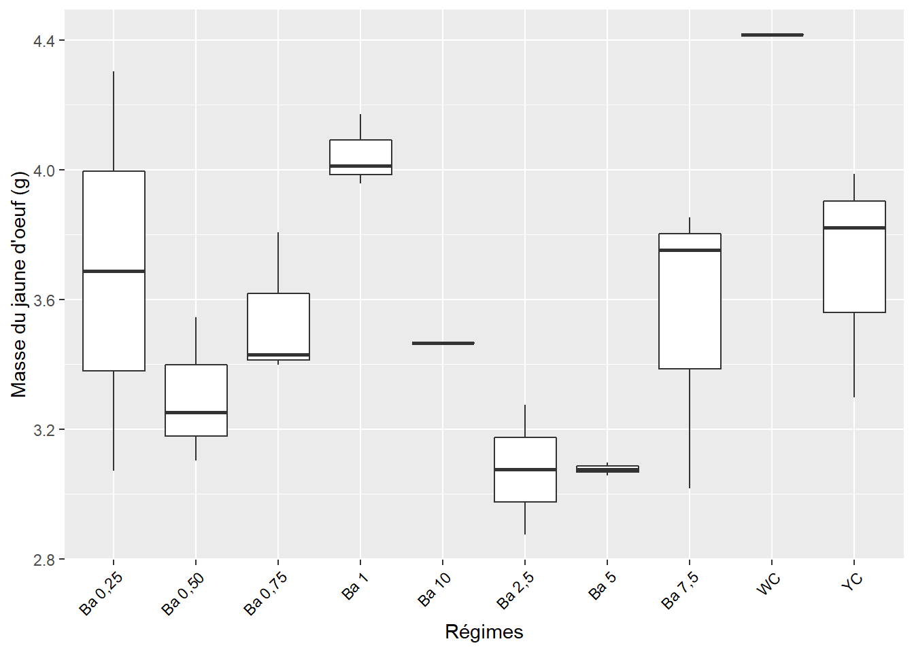
5.4.5 Test post-hoc, Student-Newman Keuls, masse du jaune
Comparaisons des moyennes par paires
tb_mj3 <- (SNK.test(lmj3, "regime", group = TRUE))$groups %>%
mutate(regime = rownames(.)) %>%
select(regime, masse_du_jaune, groups) %>%
as_tibble()
tb_mj3## # A tibble: 10 x 3
## regime masse_du_jaune groups
## <chr> <dbl> <chr>
## 1 WC 4.42 a
## 2 Ba 1 4.05 ab
## 3 YC 3.70 bc
## 4 Ba 0,25 3.69 bc
## 5 Ba 0,75 3.54 bc
## 6 Ba 7,5 3.54 bc
## 7 Ba 10 3.47 bc
## 8 Ba 0,50 3.30 bc
## 9 Ba 5 3.08 c
## 10 Ba 2,5 3.07 c5.4.6 Visualisation des groupes, bareplots avec labels
ggplot(data = tb_mj3, mapping = aes(x = regime, y = masse_du_jaune)) +
geom_bar(stat = "identity", color = "blue", fill = "grey", width = 0.6) +
#ylim(0, 2) +
geom_text(data = tb_mj3, aes(label = groups), vjust = -0.5, size = 4) +
theme_classic() +
xlab("Régimes") + ylab("Masse du jaune d'oeuf (g)") +
theme(axis.text.x = element_text(angle = 45, color = "black", vjust = 1, hjust = 1))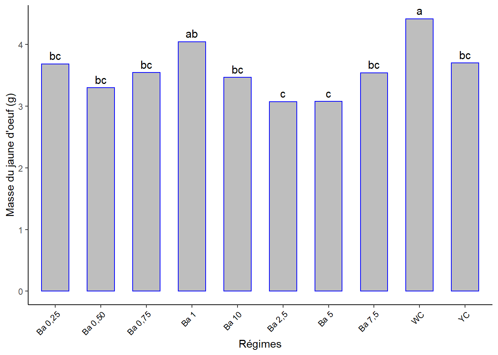
5.5 Masse du blanc d’oeuf masse_du_blanc
5.5.1 Test de normalité de Shapiro-Wilk, masse du blanc
- Ho. la distribution de l’échantillon est normale (ou n’est pas différente d’une distribution normale).
## # A tibble: 1 x 3
## variable statistic p
## <chr> <dbl> <dbl>
## 1 masse_du_blanc 0.955 0.233p-value > 0.05 => distribution normale.
5.5.2 Test de sphéricité (homogénéité des variances), masse du blanc
Ho. Toutes les variances des populations sont égales.H1ouHa. Au moins deux d’entre elles diffèrent.
## Levene's Test for Homogeneity of Variance (center = median)
## Df F value Pr(>F)
## group 9 0.6643 0.7308
## 20p-value > 0.05 => variances homogènes.
5.5.3 ANOVA masse du blanc
Si la p-value est inférieure au seuil de signification 0.05, on conclut qu’il existe des différences significatives entre les groupes (entre au moins deux groupes).
si non, il n’y a pas de différence entre les effets des différents régimes.
## Analysis of Variance Table
##
## Response: masse_du_blanc
## Df Sum Sq Mean Sq F value Pr(>F)
## regime 9 16.2669 1.80743 7.4607 9.802e-05 ***
## Residuals 20 4.8452 0.24226
## ---
## Signif. codes: 0 '***' 0.001 '**' 0.01 '*' 0.05 '.' 0.1 ' ' 1p-value < 0.01 => au moins deux régimes ont des effets très signifiquement différents.
5.5.4 Visualisation boxplots masse du blanc
ggplot(data = s3, aes(x = regime, y = masse_du_blanc)) +
geom_boxplot() +
#theme_classic() +
xlab("Régimes") + ylab("Masse du blanc d'oeuf (g)") +
theme(axis.text.x = element_text(angle = 45, color = "black", vjust = 1, hjust = 1))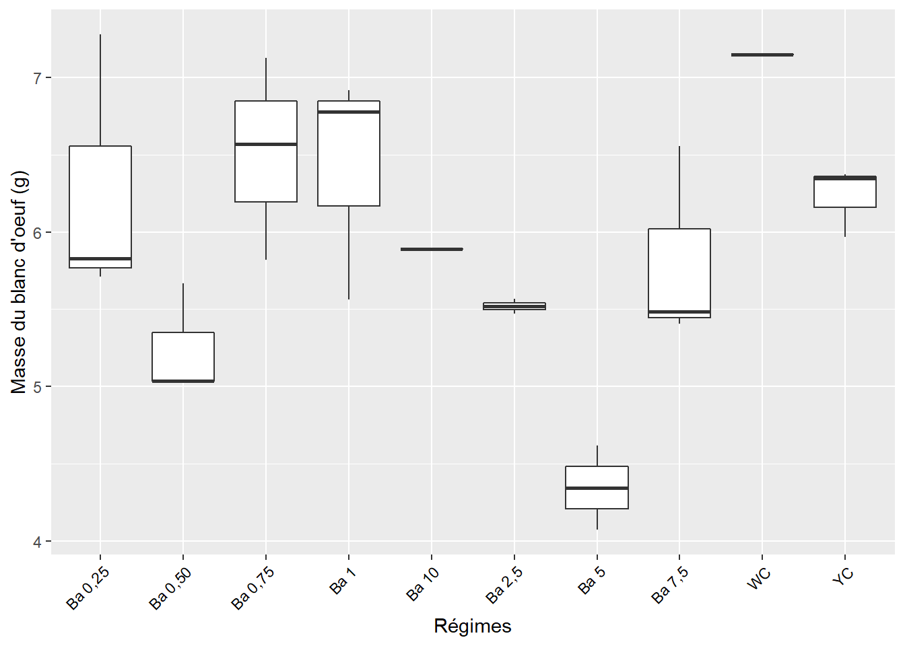
5.5.5 Test post-hoc, Student-Newman Keuls, masse du jaune
Comparaisons des moyennes par paires :
tb_mb3 <- (SNK.test(lmb3, "regime", group = TRUE))$groups %>%
mutate(regime = rownames(.)) %>%
select(regime, masse_du_blanc, groups) %>%
as_tibble()
tb_mb3## # A tibble: 10 x 3
## regime masse_du_blanc groups
## <chr> <dbl> <chr>
## 1 WC 7.15 a
## 2 Ba 0,75 6.50 ab
## 3 Ba 1 6.42 ab
## 4 Ba 0,25 6.27 ab
## 5 YC 6.23 ab
## 6 Ba 10 5.89 ab
## 7 Ba 7,5 5.81 b
## 8 Ba 2,5 5.52 b
## 9 Ba 0,50 5.25 b
## 10 Ba 5 4.34 c5.5.6 Visualisation des groupes, bareplots avec labels
ggplot(data = tb_mb3, mapping = aes(x = regime, y = masse_du_blanc)) +
geom_bar(stat = "identity", color = "blue", fill = "grey", width = 0.6) +
#ylim(0, 2) +
geom_text(data = tb_mb3, aes(label = groups), vjust = -0.5, size = 4) +
theme_classic() +
xlab("Régimes") + ylab("Masse du blanc d'oeuf (g)") +
theme(axis.text.x = element_text(angle = 45, color = "black", vjust = 1, hjust = 1))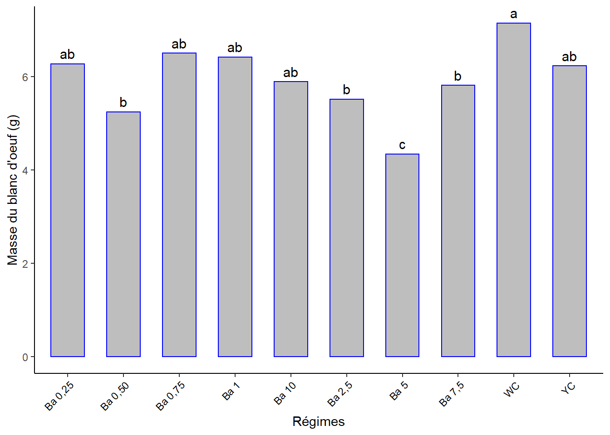
5.6 Indice l de l’intérieur de la coquille l_int_coq
5.6.1 Test de normalité de Shapiro-Wilk, Indice l
- Ho. la distribution de l’échantillon est normale (ou n’est pas différente d’une distribution normale).
## # A tibble: 1 x 3
## variable statistic p
## <chr> <dbl> <dbl>
## 1 l_int_coq 0.792 0.0000466p-value < 0.05 => distribution non-normale. => Alternative non-paramétrique : Test de Kruskal-Wallis recommandé lorsque les hypothèses du test ANOVA à un facteur ne sont pas respectées.
## # A tibble: 1 x 6
## .y. n statistic df p method
## * <chr> <int> <dbl> <int> <dbl> <chr>
## 1 l_int_coq 30 19.3 9 0.0227 Kruskal-Wallisp-value < 0.05 => il y a une différence significative entre les effets d’au moins 2 régimes sur cet indice au seuil de 5%.
Test de Dunn pour identifier les groupes différents.
s3 %>%
dunn_test(l_int_coq ~ regime, p.adjust.method = "bonferroni") %>%
select(group1, group2, p, p.adj, p.adj.signif) %>%
filter(p.adj.signif != "ns")## # A tibble: 0 x 5
## # ... with 5 variables: group1 <chr>, group2 <chr>, p <dbl>, p.adj <dbl>,
## # p.adj.signif <chr>s3 %>%
select(regime, l_int_coq) %>%
group_by(regime) %>%
summarise_all(list(l_int_coq_moyen = mean, sd = sd))## # A tibble: 10 x 3
## regime l_int_coq_moyen sd
## <fct> <dbl> <dbl>
## 1 Ba 0,25 51.7 2.18
## 2 Ba 0,50 42.4 7.92
## 3 Ba 0,75 45.2 7.32
## 4 Ba 1 47.8 9.77
## 5 Ba 10 41.7 0
## 6 Ba 2,5 48.1 0.780
## 7 Ba 5 39.8 0.950
## 8 Ba 7,5 48.0 9.58
## 9 WC 82.4 0
## 10 YC 86.2 1.52Pourtant, pas de groupes différents détectés par ce test !!!?
5.7 Indice a de l’intérieur de la coquille a_int_coq
5.7.1 Test de normalité de Shapiro-Wilk, Indice a
- Ho. la distribution de l’échantillon est normale (ou n’est pas différente d’une distribution normale).
## # A tibble: 1 x 3
## variable statistic p
## <chr> <dbl> <dbl>
## 1 a_int_coq 0.800 0.0000646p-value < 0.05 => distribution non-normale. => Alternative non-paramétrique : Test de Kruskal-Wallis recommandé lorsque les hypothèses du test ANOVA à un facteur ne sont pas respectées.
## # A tibble: 1 x 6
## .y. n statistic df p method
## * <chr> <int> <dbl> <int> <dbl> <chr>
## 1 a_int_coq 30 20.3 9 0.0159 Kruskal-Wallisp-value < 0.05 => il y a une différence significative entre les effets d’au moins 2 régimes sur cet indice au seuil de 5%.
Test de Dunn pour identifier les groupes différents.
s3 %>%
dunn_test(a_int_coq ~ regime, p.adjust.method = "bonferroni") %>%
select(group1, group2, p, p.adj, p.adj.signif) %>%
filter(p.adj.signif != "ns")## # A tibble: 0 x 5
## # ... with 5 variables: group1 <chr>, group2 <chr>, p <dbl>, p.adj <dbl>,
## # p.adj.signif <chr>Pas de différence détectée avec ce test cependant !!?
5.8 Indice b de l’intérieur de la coquille b_int_coq
5.8.1 Test de normalité de Shapiro-Wilk, Indice b
- Ho. La distribution de l’échantillon est normale (ou n’est pas différente d’une distribution normale).
## # A tibble: 1 x 3
## variable statistic p
## <chr> <dbl> <dbl>
## 1 b_int_coq 0.954 0.214p-value > 0.05 => distribution normale
5.8.2 Test de sphéricité (homogénéité des variances), Indice b
Ho. Toutes les variances des populations sont égales.H1ouHa. Au moins deux d’entre elles diffèrent.
## Levene's Test for Homogeneity of Variance (center = median)
## Df F value Pr(>F)
## group 9 1.184 0.3566
## 20p-value > 0.05 => variances homogènes.
5.8.3 ANOVA, Indice b
Si la p-value est inférieure au seuil de signification 0.05, on conclut qu’il existe des différences significatives entre les groupes (entre au moins deux groupes).
si non, il n’y a pas de différence entre les effets des différents régimes.
## Analysis of Variance Table
##
## Response: b_int_coq
## Df Sum Sq Mean Sq F value Pr(>F)
## regime 9 116.811 12.9790 4.5524 0.0023 **
## Residuals 20 57.021 2.8511
## ---
## Signif. codes: 0 '***' 0.001 '**' 0.01 '*' 0.05 '.' 0.1 ' ' 1p-value < 0.05 => au moins deux régimes ont des effets signifiquement différents.
5.8.4 Visualisation boxplots, Indice b
ggplot(data = s3, aes(x = regime, y = b_int_coq)) +
geom_boxplot() +
#theme_classic() +
xlab("Régimes") + ylab("Indice b intérieur coquille") +
theme(axis.text.x = element_text(angle = 45, color = "black", vjust = 1, hjust = 1))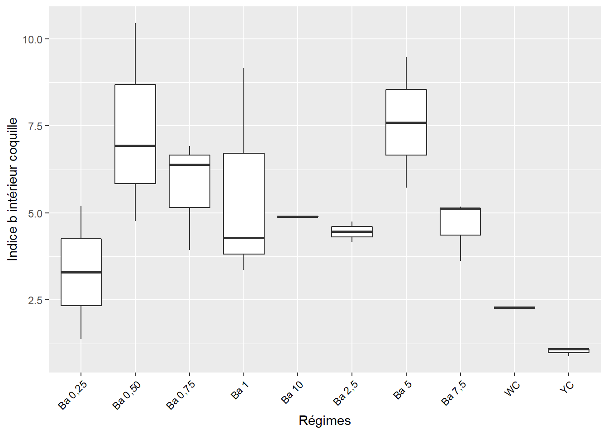
5.8.5 Test post-hoc, Student-Newman Keuls, Indice b
Comparaisons des moyennes par paires
tb_ibc3 <- (SNK.test(libc3, "regime", group = TRUE))$groups %>%
mutate(regime = rownames(.)) %>%
select(regime, b_int_coq, groups) %>%
as_tibble()
tb_ibc3## # A tibble: 10 x 3
## regime b_int_coq groups
## <chr> <dbl> <chr>
## 1 Ba 5 7.6 a
## 2 Ba 0,50 7.38 a
## 3 Ba 0,75 5.75 ab
## 4 Ba 1 5.60 ab
## 5 Ba 10 4.89 abc
## 6 Ba 7,5 4.64 abc
## 7 Ba 2,5 4.46 abc
## 8 Ba 0,25 3.30 abc
## 9 WC 2.28 bc
## 10 YC 1.02 c5.8.6 Visualisation des groupes, bareplots avec labels, Indice b
ggplot(data = tb_ibc3, mapping = aes(x = regime, y = b_int_coq)) +
geom_bar(stat = "identity", color = "blue", fill = "grey", width = 0.6) +
#ylim(0, 2) +
geom_text(data = tb_ibc3, aes(label = groups), vjust = -0.5, size = 4) +
theme_classic() +
xlab("Régimes") + ylab("Indice b intérieur coquille") +
theme(axis.text.x = element_text(angle = 45, color = "black", vjust = 1, hjust = 1))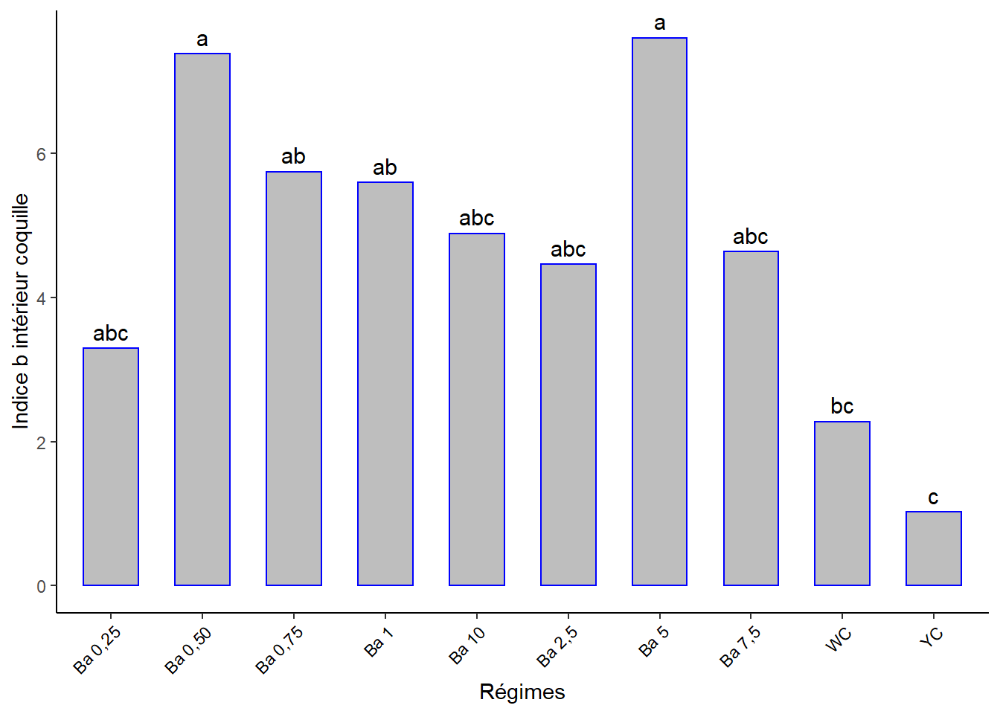
5.9 Indice l du jaune d’oeuf l_jaune
5.9.1 Test de normalité de Shapiro-Wilk, Indice l du jaune
- Ho. La distribution de l’échantillon est normale (ou n’est pas différente d’une distribution normale).
## # A tibble: 1 x 3
## variable statistic p
## <chr> <dbl> <dbl>
## 1 l_jaune 0.870 0.00168p-value < 0.05 -> distribution non-normale. => Alternative non-paramétrique : Test de Kruskal-Wallis recommandé lorsque les hypothèses du test ANOVA à un facteur ne sont pas respectées.
## # A tibble: 1 x 6
## .y. n statistic df p method
## * <chr> <int> <dbl> <int> <dbl> <chr>
## 1 l_jaune 30 14.1 9 0.119 Kruskal-Wallisp-value > 0.05 => il n’y a pas de différence significative entre les effets des différents régimes pour cet indice au seuil de 5%.
5.10 Indice a du jaune d’oeuf a_jaune
5.10.1 Test de normalité de Shapiro-Wilk, Indice a du jaune
- Ho. la distribution de l’échantillon est normale (ou n’est pas différente d’une distribution normale).
## # A tibble: 1 x 3
## variable statistic p
## <chr> <dbl> <dbl>
## 1 a_jaune 0.975 0.686p-value > 0.05 => distribution normale
5.10.2 Test de sphéricité (homogénéité des variances), Indice a du jaune
Ho. Toutes les variances des populations sont égales.H1ouHa. Au moins deux d’entre elles diffèrent.
## Levene's Test for Homogeneity of Variance (center = median)
## Df F value Pr(>F)
## group 9 1.5308 0.2042
## 20p-value > 0.05 => variances homogènes.
5.10.3 ANOVA, Indice a du jaune
Si la p-value est inférieure au seuil de signification 0.05, on conclut qu’il existe des différences significatives entre les groupes (entre au moins deux groupes).
si non, il n’y a pas de différence entre les effets des différents régimes.
## Analysis of Variance Table
##
## Response: a_jaune
## Df Sum Sq Mean Sq F value Pr(>F)
## regime 9 9.7527 1.08363 1.2112 0.3417
## Residuals 20 17.8935 0.89468p-value > 0.05 => Pas d’effets signifiquement différents entre les régimes.
5.11 Indice b du jaune d’oeuf b_jaune
5.11.1 Test de normalité de Shapiro-Wilk, Indice b du jaune
- Ho. la distribution de l’échantillon est normale (ou n’est pas différente d’une distribution normale).
## # A tibble: 1 x 3
## variable statistic p
## <chr> <dbl> <dbl>
## 1 b_jaune 0.918 0.0232p-value < 0.05 -> distribution non-normale. => Alternative non-paramétrique : Test de Kruskal-Wallis recommandé lorsque les hypothèses du test ANOVA à un facteur ne sont pas respectées.
## # A tibble: 1 x 6
## .y. n statistic df p method
## * <chr> <int> <dbl> <int> <dbl> <chr>
## 1 b_jaune 30 21.5 9 0.0106 Kruskal-Wallisp-value < 0.05 => Au moins 2 groupes ont des effets significativement différents.
Test de Dunn pour identifier les groupes différents.
s3 %>%
dunn_test(b_jaune ~ regime, p.adjust.method = "bonferroni") %>%
select(group1, group2, p, p.adj, p.adj.signif) %>%
filter(p.adj.signif != "ns")## # A tibble: 1 x 5
## group1 group2 p p.adj p.adj.signif
## <chr> <chr> <dbl> <dbl> <chr>
## 1 Ba 7,5 YC 0.000983 0.0442 *s3 %>%
select(regime, b_jaune) %>%
group_by(regime) %>%
summarise_all(list(b_jaune_moyen = mean, sd = sd))## # A tibble: 10 x 3
## regime b_jaune_moyen sd
## <fct> <dbl> <dbl>
## 1 Ba 0,25 21.7 2.14
## 2 Ba 0,50 19.9 6.22
## 3 Ba 0,75 18.0 4.93
## 4 Ba 1 20.1 2.94
## 5 Ba 10 27.4 0
## 6 Ba 2,5 20.4 0.49
## 7 Ba 5 25.6 3.16
## 8 Ba 7,5 17.7 0.638
## 9 WC 23.6 0
## 10 YC 37.5 3.22le YC et le Ba-7.5 ont des effets significativement différents sur l’indice b du jaune d’oeuf.
5.12 Teneur en protéines totales prot_tot
5.12.1 Test de normalité de Shapiro-Wilk, protéines
- Ho. la distribution de l’échantillon est normale (ou n’est pas différente d’une distribution normale).
## # A tibble: 1 x 3
## variable statistic p
## <chr> <dbl> <dbl>
## 1 prot_tot 0.505 0.00000000600p-value < 0.05 => distribution non-normale. => Alternative non-paramétrique : Test de Kruskal-Wallis recommandé lorsque les hypothèses du test ANOVA à un facteur ne sont pas respectées.
## # A tibble: 1 x 6
## .y. n statistic df p method
## * <chr> <int> <dbl> <int> <dbl> <chr>
## 1 prot_tot 30 14.3 9 0.112 Kruskal-Wallisp-value > 0.05 => Pas de différences significatives entre les effets des régimes au seuil de 5%.
5.13 Teneur en cholestérol total chol_tot
5.13.1 Test de normalité de Shapiro-Wilk, cholestérol
- Ho. la distribution de l’échantillon est normale (ou n’est pas différente d’une distribution normale).
## # A tibble: 1 x 3
## variable statistic p
## <chr> <dbl> <dbl>
## 1 chol_tot 0.866 0.00135p-value < 0.05 => distribution non-normale. => Alternative non-paramétrique : Test de Kruskal-Wallis recommandé lorsque les hypothèses du test ANOVA à un facteur ne sont pas respectées.
## # A tibble: 1 x 6
## .y. n statistic df p method
## * <chr> <int> <dbl> <int> <dbl> <chr>
## 1 chol_tot 30 17.5 9 0.042 Kruskal-Wallisp-value < 0.05 : il y a une différence significative entre au moins deux effets de régimes au seuil de 5%.
Test de Dunn pour identifier les groupes différents.
s3 %>%
dunn_test(chol_tot ~ regime, p.adjust.method = "bonferroni") %>%
select(group1, group2, p, p.adj, p.adj.signif) %>%
filter(p.adj.signif != "ns")## # A tibble: 0 x 5
## # ... with 5 variables: group1 <chr>, group2 <chr>, p <dbl>, p.adj <dbl>,
## # p.adj.signif <chr>s3 %>%
select(regime, chol_tot) %>%
group_by(regime) %>%
summarise_all(list(chol_tot_moyen = mean, sd = sd))## # A tibble: 10 x 3
## regime chol_tot_moyen sd
## <fct> <dbl> <dbl>
## 1 Ba 0,25 10903. 478.
## 2 Ba 0,50 11634. 168.
## 3 Ba 0,75 12873. 615.
## 4 Ba 1 10888. 289.
## 5 Ba 10 11061. 493.
## 6 Ba 2,5 11965. 143.
## 7 Ba 5 12276. 495.
## 8 Ba 7,5 11704. 558.
## 9 WC 10347. 4722.
## 10 YC 11659. 335.Pourtant, pas de groupes différents identifiés par ce test !?
5.14 Teneur en lipides totales lip_tot
Lipides non analysées pour cette séance.
5.15 Exploration des corrélations, séance 3
Le corrélogramme suivant met en évidence les éventuelles corrélations dans les séries de données.
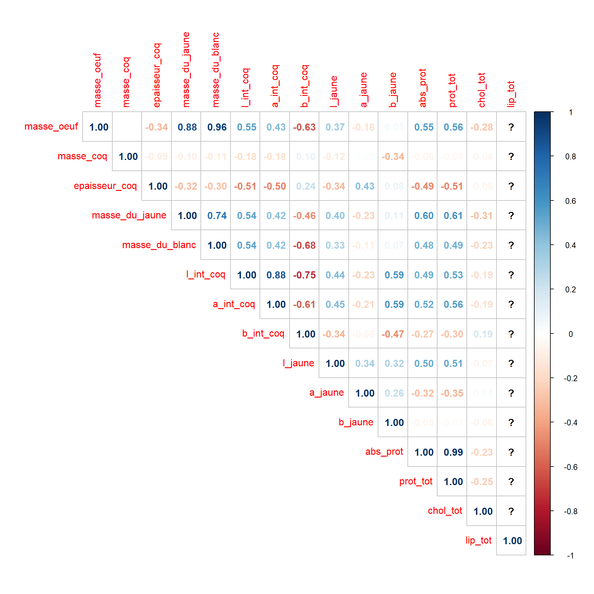